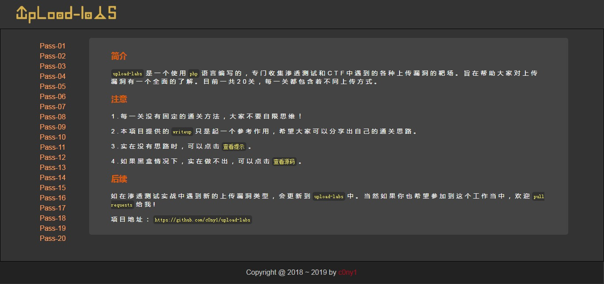
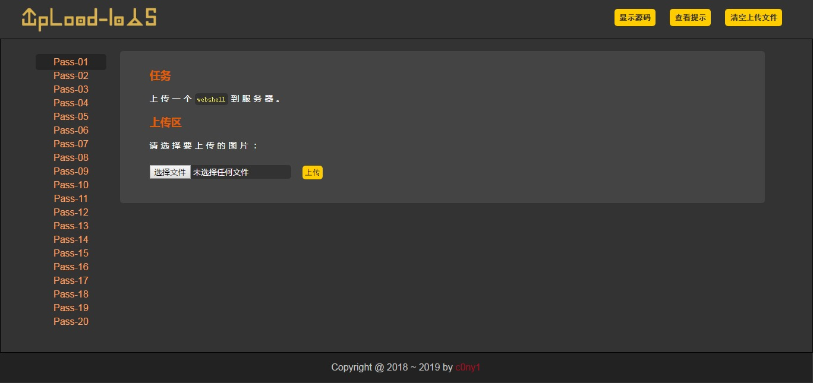
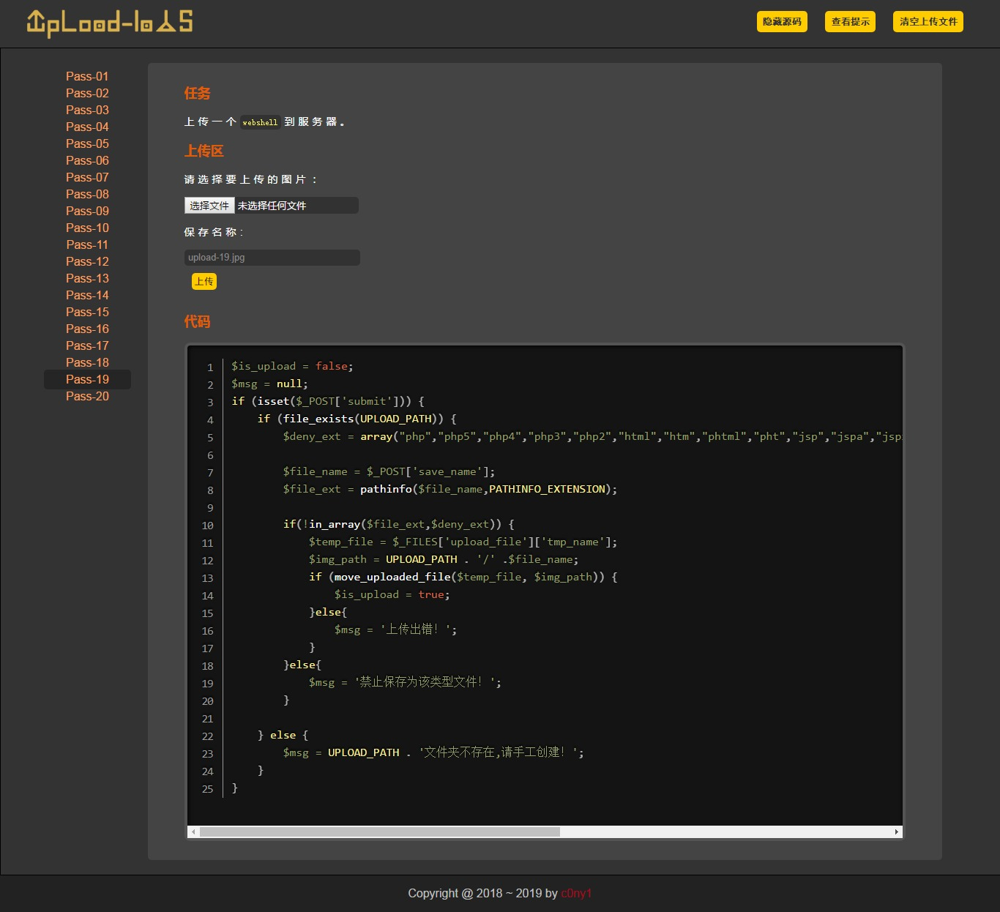

<!DOCTYPE html>
<html lang class="loading">
<head><meta name="generator" content="Hexo 3.9.0">
    <meta charset="UTF-8">
    <meta http-equiv="X-UA-Compatible" content="IE=edge,chrome=1">
    <meta name="viewport" content="width=device-width, minimum-scale=1.0, maximum-scale=1.0, user-scalable=no">
    <title>Knlvre - 信息安全成长过程中的一些学习记录</title>
    <meta name="apple-mobile-web-app-capable" content="yes">
    <meta name="apple-mobile-web-app-status-bar-style" content="black-translucent">
    <meta name="google" content="notranslate">
    <meta name="keywords" content="TriDiamond Obsidian,"> 
    
    <meta name="author" content="Knlvre"> 
    <link rel="alternative" href="atom.xml" title="Knlvre" type="application/atom+xml"> 
    <link rel="icon" href="/knlvre.github.io/img/favicon.png"> 
    <link href="https://fonts.loli.net/css?family=Roboto+Mono|Rubik&display=swap" rel="stylesheet">
    <link rel="stylesheet" href="//at.alicdn.com/t/font_1429596_nzgqgvnmkjb.css">
    <link rel="stylesheet" href="//cdn.bootcss.com/animate.css/3.7.2/animate.min.css">
    <link rel="stylesheet" href="//cdnjs.cloudflare.com/ajax/libs/social-share.js/1.0.16/css/share.min.css">
    <link rel="stylesheet" href="//cdn.bootcss.com/codemirror/5.48.4/codemirror.min.css">
    <link rel="stylesheet" href="//cdn.bootcss.com/codemirror/5.48.4/theme/dracula.css">
    <link rel="stylesheet" href="/knlvre.github.io/css/obsidian.css">
    <link rel="stylesheet" href="/knlvre.github.io/css/ball-atom.min.css">
</head>
</html>

<body class="loading">
    <div class="loader">
        <div class="la-ball-atom la-2x">
            <div></div>
            <div></div>
            <div></div>
            <div></div>
        </div>
    </div>
    <span id="config-title" style="display:none">Knlvre</span>
    <div id="loader"></div>
    <div id="single" class="page">
    <div id="top">
        <a class="iconfont icon-left image-icon" href="javascript:history.back()"></a>
    </div>
    <div class="clone-element"></div>
    <div class="section dark-obsidian">
        <div class="article animated fadeIn">
            <div class="main animated fadeIn">
                <div class="content animated fadeIn">
                
                        <p align="center"><br>  <br></p>

<p align="center"><br>  <br>  <br>  <br></p>

<hr>
<p><strong>upload-labs是一个使用php语言编写的，专门收集渗透测试和CTF中遇到的各种上传漏洞的靶场。旨在帮助大家对上传漏洞有一个全面的了解。目前一共20关，每一关都包含着不同上传方式。</strong></p>
<h2 id="0x01-Screenshot"><a href="#0x01-Screenshot" class="headerlink" title="0x01 Screenshot"></a>0x01 Screenshot</h2><h4 id="1-1-主界面"><a href="#1-1-主界面" class="headerlink" title="1.1 主界面"></a>1.1 主界面</h4><p></p>
<h4 id="1-2-每一关"><a href="#1-2-每一关" class="headerlink" title="1.2 每一关"></a>1.2 每一关</h4><p></p>
<h4 id="1-3-查看代码"><a href="#1-3-查看代码" class="headerlink" title="1.3 查看代码"></a>1.3 查看代码</h4><p></p>
<h2 id="0x02-Install"><a href="#0x02-Install" class="headerlink" title="0x02 Install"></a>0x02 Install</h2><h4 id="2-1-环境要求"><a href="#2-1-环境要求" class="headerlink" title="2.1 环境要求"></a>2.1 环境要求</h4><p>若要自己亲自搭建环境，请按照以下配置环境，方可正常运行每个Pass。</p>
<table>
<thead>
<tr>
<th style="text-align:left">配置项</th>
<th style="text-align:left">配置</th>
<th style="text-align:left">描述</th>
</tr>
</thead>
<tbody>
<tr>
<td style="text-align:left">操作系统</td>
<td style="text-align:left">Window or Linux</td>
<td style="text-align:left">推荐使用Windows，除了Pass-19必须在linux下，其余Pass都可以在Windows上运行</td>
</tr>
<tr>
<td style="text-align:left">PHP版本</td>
<td style="text-align:left">推荐5.2.17</td>
<td style="text-align:left">其他版本可能会导致部分Pass无法突破</td>
</tr>
<tr>
<td style="text-align:left">PHP组件</td>
<td style="text-align:left">php_gd2,php_exif</td>
<td style="text-align:left">部分Pass依赖这两个组件</td>
</tr>
<tr>
<td style="text-align:left">中间件</td>
<td style="text-align:left">设置Apache以moudel方式连接</td>
</tr>
</tbody>
</table>
<h4 id="2-2-Windows快速搭建"><a href="#2-2-Windows快速搭建" class="headerlink" title="2.2 Windows快速搭建"></a>2.2 Windows快速搭建</h4><p>项目提供了一个Windows下,按照以上配置要求配置好的集成环境</p>
<p>下载地址：<a href="https://github.com/c0ny1/upload-labs/releases" target="_blank" rel="noopener">https://github.com/c0ny1/upload-labs/releases</a></p>
<p>集成环境绿色免安装，解压即可使用。</p>
<h4 id="2-3-Linux快速搭建"><a href="#2-3-Linux快速搭建" class="headerlink" title="2.3 Linux快速搭建"></a>2.3 Linux快速搭建</h4><p>创建镜像</p>
<pre><code>$ cd upload-labs/docker
$ docker build -t upload-labs .
</code></pre><p>或</p>
<pre><code>$ docker pull c0ny1/upload-labs
</code></pre><p>创建容器</p>
<pre><code>$  docker run -d -p 80:80 upload-labs:latest
</code></pre><h2 id="0x03-Summary"><a href="#0x03-Summary" class="headerlink" title="0x03 Summary"></a>0x03 Summary</h2><h4 id="3-1-靶机包含漏洞类型分类"><a href="#3-1-靶机包含漏洞类型分类" class="headerlink" title="3.1 靶机包含漏洞类型分类"></a>3.1 靶机包含漏洞类型分类</h4><p></p>
<h4 id="3-2-如何判断上传漏洞类型"><a href="#3-2-如何判断上传漏洞类型" class="headerlink" title="3.2 如何判断上传漏洞类型?"></a>3.2 如何判断上传漏洞类型?</h4><p></p>
<h2 id="0x04-Thanks"><a href="#0x04-Thanks" class="headerlink" title="0x04 Thanks"></a>0x04 Thanks</h2><ul>
<li>感谢<a href="https://github.com/xiaoxiaoki" target="_blank" rel="noopener">小小黄</a>做的logo</li>
</ul>

                
                </div>
            </div>
        </div>
    </div>
</div>

    <div id="back-to-top" class="animated fadeIn faster">
        <div class="flow"></div>
        <span class="percentage animated fadeIn faster">0%</span>
        <span class="iconfont icon-top02 animated fadeIn faster"></span>
    </div>
</body>
<footer>
    <p class="copyright" id="copyright">
        &copy; 2019
        <span class="gradient-text">
            Knlvre
        </span>.
        Powered by <a href="http://hexo.io/" title="Hexo" target="_blank" rel="noopener">Hexo</a>
        Theme
        <span class="gradient-text">
            <a href="https://github.com/TriDiamond/hexo-theme-obsidian" title="Obsidian" target="_blank" rel="noopener">Obsidian</a>
        </span>
        <small><a href="https://github.com/TriDiamond/hexo-theme-obsidian/blob/master/CHANGELOG.md" title="v1.4.3" target="_blank" rel="noopener">v1.4.3</a></small>
    </p>
</footer>

<script type="text/javascript" src="https://cdn.bootcss.com/mathjax/2.7.6/MathJax.js?config=TeX-AMS-MML_HTMLorMML">
</script>
<script>
  MathJax.Hub.Config({
    "HTML-CSS": {
      preferredFont: "TeX",
      availableFonts: ["STIX", "TeX"],
      linebreaks: {
        automatic: true
      },
      EqnChunk: (MathJax.Hub.Browser.isMobile ? 10 : 50)
    },
    tex2jax: {
      inlineMath: [
        ["$", "$"],
        ["\\(", "\\)"]
      ],
      processEscapes: true,
      ignoreClass: "tex2jax_ignore|dno",
      skipTags: ['script', 'noscript', 'style', 'textarea', 'pre', 'code']
    },
    TeX: {
      noUndefined: {
        attributes: {
          mathcolor: "red",
          mathbackground: "#FFEEEE",
          mathsize: "90%"
        }
      },
      Macros: {
        href: "{}"
      }
    },
    messageStyle: "none"
  });
</script>
<script>
  function initialMathJax() {
    MathJax.Hub.Queue(function () {
      var all = MathJax.Hub.getAllJax(),
        i;
      // console.log(all);
      for (i = 0; i < all.length; i += 1) {
        console.log(all[i].SourceElement().parentNode)
        all[i].SourceElement().parentNode.className += ' has-jax';
      }
    });
  }

  function reprocessMathJax() {
    if (typeof MathJax !== 'undefined') {
      MathJax.Hub.Queue(["Typeset", MathJax.Hub]);
    }
  }
</script>


    <link rel="stylesheet" href="//cdn.bootcss.com/gitalk/1.5.0/gitalk.min.css">
    <script src="//cdn.bootcss.com/gitalk/1.5.0/gitalk.min.js"></script>

<script src="//cdnjs.cloudflare.com/ajax/libs/jquery/3.4.1/jquery.min.js"></script>
<script src="/knlvre.github.io/js/plugin.js"></script>
<script src="/knlvre.github.io/js/obsidian.js"></script>
<script src="/knlvre.github.io/js/jquery.truncate.js"></script>
<script src="/knlvre.github.io/js/search.js"></script>
<script src="//cdn.bootcss.com/typed.js/2.0.10/typed.min.js"></script>
<script src="//cdn.bootcss.com/blueimp-md5/2.12.0/js/md5.min.js"></script>
<script src="//cdnjs.cloudflare.com/ajax/libs/social-share.js/1.0.16/js/social-share.min.js"></script>

<script src="https://cdn.bootcss.com/codemirror/5.48.4/codemirror.min.js"></script>

    <script src="//cdn.bootcss.com/codemirror/5.48.4/mode/javascript/javascript.min.js"></script>

    <script src="//cdn.bootcss.com/codemirror/5.48.4/mode/css/css.min.js"></script>

    <script src="//cdn.bootcss.com/codemirror/5.48.4/mode/xml/xml.min.js"></script>

    <script src="//cdn.bootcss.com/codemirror/5.48.4/mode/htmlmixed/htmlmixed.min.js"></script>

    <script src="//cdn.bootcss.com/codemirror/5.48.4/mode/clike/clike.min.js"></script>

    <script src="//cdn.bootcss.com/codemirror/5.48.4/mode/php/php.min.js"></script>

    <script src="//cdn.bootcss.com/codemirror/5.48.4/mode/shell/shell.min.js"></script>

    <script src="//cdn.bootcss.com/codemirror/5.48.4/mode/python/python.min.js"></script>


    <script src="/knlvre.github.io/js/busuanzi.min.js"></script>
    <script>
        $(document).ready(function () {
            if ($('span[id^="busuanzi_"]').length) {
                initialBusuanzi();
            }
        });
    </script>


<link rel="stylesheet" href="//cdn.bootcss.com/photoswipe/4.1.3/photoswipe.min.css">
<link rel="stylesheet" href="//cdn.bootcss.com/photoswipe/4.1.3/default-skin/default-skin.min.css">
<script src="//cdn.bootcss.com/photoswipe/4.1.3/photoswipe.min.js"></script>
<script src="//cdn.bootcss.com/photoswipe/4.1.3/photoswipe-ui-default.min.js"></script>

<!-- Root element of PhotoSwipe. Must have class pswp. -->
<div class="pswp" tabindex="-1" role="dialog" aria-hidden="true">
    <!-- Background of PhotoSwipe. 
         It's a separate element as animating opacity is faster than rgba(). -->
    <div class="pswp__bg"></div>
    <!-- Slides wrapper with overflow:hidden. -->
    <div class="pswp__scroll-wrap">
        <!-- Container that holds slides. 
            PhotoSwipe keeps only 3 of them in the DOM to save memory.
            Don't modify these 3 pswp__item elements, data is added later on. -->
        <div class="pswp__container">
            <div class="pswp__item"></div>
            <div class="pswp__item"></div>
            <div class="pswp__item"></div>
        </div>
        <!-- Default (PhotoSwipeUI_Default) interface on top of sliding area. Can be changed. -->
        <div class="pswp__ui pswp__ui--hidden">
            <div class="pswp__top-bar">
                <!--  Controls are self-explanatory. Order can be changed. -->
                <div class="pswp__counter"></div>
                <button class="pswp__button pswp__button--close" title="Close (Esc)"></button>
                <button class="pswp__button pswp__button--share" title="Share"></button>
                <button class="pswp__button pswp__button--fs" title="Toggle fullscreen"></button>
                <button class="pswp__button pswp__button--zoom" title="Zoom in/out"></button>
                <!-- Preloader demo http://codepen.io/dimsemenov/pen/yyBWoR -->
                <!-- element will get class pswp__preloader--active when preloader is running -->
                <div class="pswp__preloader">
                    <div class="pswp__preloader__icn">
                      <div class="pswp__preloader__cut">
                        <div class="pswp__preloader__donut"></div>
                      </div>
                    </div>
                </div>
            </div>
            <div class="pswp__share-modal pswp__share-modal--hidden pswp__single-tap">
                <div class="pswp__share-tooltip"></div> 
            </div>
            <button class="pswp__button pswp__button--arrow--left" title="Previous (arrow left)">
            </button>
            <button class="pswp__button pswp__button--arrow--right" title="Next (arrow right)">
            </button>
            <div class="pswp__caption">
                <div class="pswp__caption__center"></div>
            </div>
        </div>
    </div>
</div>


    <!-- Global site tag (gtag.js) - Google Analytics -->
    <script async src="//www.googletagmanager.com/gtag/js?id=UA-149874671-1"></script>
    <script>
        window.dataLayer = window.dataLayer || [];
        function gtag(){dataLayer.push(arguments);}
        gtag('js', new Date());

        gtag('config', 'UA-149874671-1');
    </script>


<script>
    function initialTyped () {
        var typedTextEl = $('.typed-text');
        if (typedTextEl && typedTextEl.length > 0) {
            var typed = new Typed('.typed-text', {
                strings: ["Notes During Information Security Learning.", "信息安全学习过程中的笔记。"],
                typeSpeed: 90,
                loop: true,
                loopCount: Infinity,
                backSpeed: 20,
            });
        }
    }

    if ($('.article-header') && $('.article-header').length) {
        $(document).ready(function () {
            initialTyped();
        });
    }
</script>


</html>
